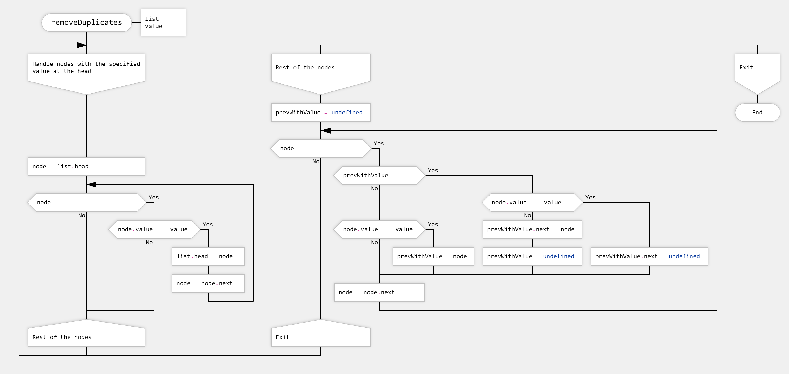

Example: Basic Algorithms on a Singly Linked List Using DRAKON Language
Even though you will unlikely encounter self-made linked list classes in production, the following algorithms give a good overview of how to depict loops and branching on drakon flowcharts.
addNode
The addNode function creates a new node with a given value and adds it to the head of the list. The new node’s next property points to the previous head. Then, the function updates the list's head to be the new node.
countValues
The countValues function goes through the list and counts how many nodes have a specific value. It starts at the head and continues until it reaches the end (where next is empty). Each time a node’s value matches the specified value, it increments the count.
createListFromValues
The createListFromValues function takes an array of values and creates a linked list. Since nodes can only be added to the start of the list, the function first reverses the input array. Then, it iterates through the reversed array, adding each value as a new node to the list.
reverseList
The reverseList function reverses the linked list in place. It starts at the head and traverses each node, changing the next pointer to point to the previous node. The original head’s next becomes empty, making it the new tail of the reversed list.
removeDuplicates
The removeDuplicates function scans the list to ensure there are no consecutive nodes with the specified value. After running, the list will not have two neighboring nodes with that value, although duplicates of other values are allowed.
The algorithm has two parts:
- Handling the Head: If the list starts with nodes that have the specified value, it removes the extra nodes by updating the head to the next different node.
- Processing the Rest: It then processes the remaining nodes using a finite state machine with two states:
- Previous Node Has Value: If the previous node has the specified value, it removes the current node if it also has that value.
- Previous Node Does Not Have Value: It keeps the current node and updates the previous node tracker.
This ensures that only one node with the specified value remains in any consecutive sequence. It also handles the case where the last node has the specified value by properly updating the next pointer.
Notes
- No Complex Logical Operators: This example avoids using NOT, NOT EQUAL, AND, and OR operators. DRAKON flowcharts help the reader, making complex logic operators unnecessary.
- One Idea per Icon: Each icon in the diagrams represents a single statement or a closely related set of statements, following the "one icon—one idea" principle.
- Clear Loop Visibility: Every loop in a function is clearly marked, either with an arrow or a LOOP icon, making loops easy to identify.